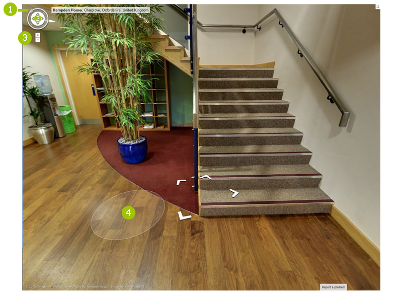

Navegación
Las panorámicas en 360º no son cosa de hoy. LLevan muchos años funcionando, entonces ¿cúal es la razón para que a día de hoy se navegen de forma diferente si se hace desde un ordenador de escritorio/portátil o por el contrario, utiliza una tablet o un smartphone (teléfono inteligente)?.
La “culpa” de esta diferencia, la tiene la enorme expansión que durante los últimos años, han tenido tanto las tabletas como de los teléfonos. Anteriormente, las tablets no existían y los teléfonos servían para recibiry hacer llamadas, sms y sacar fotos. La aparición de los smartphones nos permitió navegar por la red, recibir correo, usar aplicaciones... era como llevar un pequeño ordenador de bolsillo.
El problema radica en que todo este tipo de smartphones, excepto los Iphone (que tampoco aceptan las antiguas panorámicas 360), llevan un sistema operativo, Android, que no soporta la tecnología con la que estaban hechas anteriormente las panorámicas de 360 grados, ésta ha quedado obsoleta y solo es útil en ordenadores de sobremesa o en portátiles.
A continuación, les explicaremos cómo navegar un trabajo de Business Photos (Fotos de Negocio o panorámicas de 360º) desde los dos diferentes tipos de terminales.
Navegación en tablet o smartphone

Para navegar una visita virtual 360 desde su ordenador de sobremesa o portátil, usted puede prescindir perfectamente de las flechas que aparecen en el ceentro de la imagen. Todo lo que necesitará será un ratón y esa especie de brújula de navegación que aparece en la parte superior izquierda.
Al mover el ratón por la porción de panorámica que aparezca en ese momento en su pantalla, se habilitarán, (cuando se pase sobre ellas) unas zonas claras (nº 4), posicionando el ratón sobre esa zona haga click en ella y la panorámica se moverá hasta ese sitio.
Para girar la imagen, usted precisará de la brujula de la parte superior. Expliquemos una a una cuales son sus funciones:
- Si se posiciona con el ratón sobre el número 1, haga click en la N y con el boton izquierdo apretado, haga ratar la imagen en la dirección que desee. No es necesario estar exacttamente sobre la N, la aplicación le permite, mientras esté pinchado el botón izquierdo y no se aleje en exceso de la brújula, seguir realizando el giro 360º.
- En el interior del círculo de la brújula, hay unas flechas, use éstas para moverse arriba y abajo, o izquierda y derecha sobre la panorámica que esté viendo en ese momento. Ambas tienen un tope a partir del cual no subirá, ni bajarán más, pero entre las cuatro cubren toda el espacio que Usted tiene en ese momento en pantalla.
- Un símbolo de suma y otro de resta, le permitirán acercarse tanto como quiera a la parte de la panorámica que quiera ver. En los ratones con rosca en el medio, está función también puede habilitarse esta acción.
- Es la marca de color más clara sobre las que tiene que posicionarse con el ratón y pinchar en ella para moverse por toda la visita virtual.